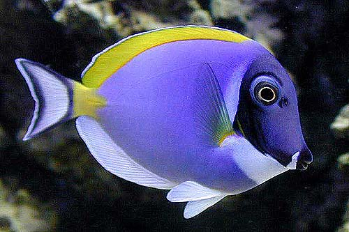
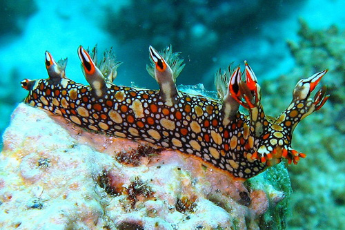
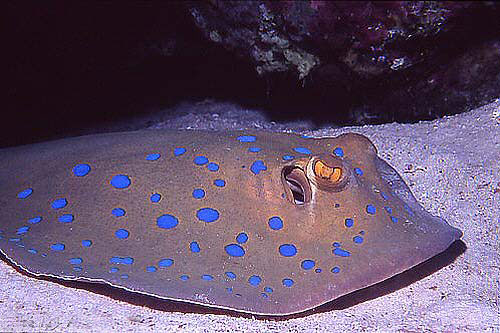

| 
|
Cirurgião Pó Azul |
O cirurgião pó azul (Acanthurus leucosternon) é um dos mais
belos peixes de água salgada para aquário . Também é comumente
chamado de pó azul tang. |
| 
|
Bornella anguilla |
O anguilla Bornella , cresce até 80 milímetros . Ele tem
uma característica padrão de cor estilo mosaico . Seu nome [
anguilla = enguia ] refere-se ao modo como nada. |
| 
|
Raia Pintada Azul |
A Raia Pintada Azul ( Neotrygon kuhlii ) é uma espécie de
raia da família Dasyatidae. |

|
Camarão Dançante |
O camarão dança é um nome comum para qualquer uma das
espécies de camarão pertencente à família taxonômica
Rhynchocinetidae. Eles são geralmente distinguido de outras
espécies de camarão por seus bicos móveis. |